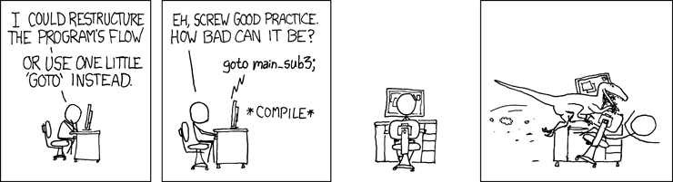

C20 Algorithmes des graphes ¶
"If in physics there's something you don't understand, you can always hide behind the uncharted depths of nature. You can always blame God. You didn't make it so complex yourself. But if your program doesn't work, there is no one to hide behind. You cannot hide behind an obstinate nature. If it doesn't work, you've messed up."
(Interview télévisée)
Cours¶
Attention
Ce diaporama ne vous donne que quelques points de repères lors de vos révisions. Il devrait être complété par la relecture attentive de vos propres notes de cours et par une révision approfondie des exercices.
Travaux dirigés¶
Travaux pratiques¶
Note
On rappelle les structures de données utilisés en OCaml pour représenter les graphes :
-
par matrice d'adjacence :
-
par liste d'adjacence :
 Exercice 1 : Nombre de chemins de longueurs k¶
Exercice 1 : Nombre de chemins de longueurs k¶
On rappelle que les puissances de la matrice d'adjacence d'un graphe donnent le nombres de chemins de longueurs \(k\) entre deux sommets de ce graphe. Plus formellement, en notant \(M\) la matrice d'adjacence d'un graphe \(G\), le coefficient \(M_{ij}^k\) de la puissance \(k-\)ième de \(M\) est le nombre de chemins du sommet \(i\) vers le sommet \(j\) (voir l'exercice 9 de la fiche de TD du chapitre 17).
-
Ecrire une fonction
mult int array array -> int array array -> int array arrayqui prend en entrée deux matrices et calcule leur produit. -
Ecrire une fonction
expr: int array array -> int -> int array arrayqui prend en entrée une matrice \(M\) et un entier \(k\) et renvoie \(M^k\) en utilisant l'algorithme d'exponentiation rapide. -
On considère le graphe suivant :
Déterminer le nombre de chemins de longueur 42 entre le sommet 6 et le sommet 7.graph LR A(("0")) B(("1")) C(("2")) D(("3")) E(("4")) F(("5")) G(("6")) H(("7")) A --> B A --> C B --> D C --> F C --> G E --> G E --> A D --> F G --> F B --> C F --> E F --> H H --> F D --> C
Vérifier votre réponse :
Exercice 2 : Parcours en largeur d'un graphe¶
-
Visualiser l'algorithme de parcours en largeur d'un graphe (site de l'université de San Francisco). On rappelle que dans ce parcours, on explore le graphe en "cercles concentriques" centrés sur le sommet de départ. Afin de s'assurer de la bonne compréhension de l'algorithme, on pourra prévoir le parcours puis lancer la visualisation afin de vérifier.
-
Ecrire en OCaml une fonction
bfs: graphe int -> int arrayqui prend en argument un graphe et un sommet de départ et renvoie un tableau de d'entiers donnant la distance minimale en nombre d'arêtes entre le sommet de départ et les sommets du graphe.Note
Dans le cours, on avait utilisé la valeur
-1pour indiquer l'absence de chemin. Une autre possibilité est d'utiliser un type option c'est en OCaml une façon élégante d'indiquer l'absence de valeur ici, le tableau de distance peut contenir un entier ou alorsNonepour indiquer qu'aucun chemin n'a été trouvé. c'est-à-dire qu'on utilise le typeNone | Some of int(voir la documentation). -
Vous pouvez télécharger ci-dessous un fichier texte représentant un graphe non orienté à 50 noeuds (et 100 arêtes). Chaque ligne est une arête sous la forme de deux entiers : sommet de départ et sommet d'arrivée. Ecrire une fonction
lire_graphe string -> int -> int*int listqui prend en argument une chaine de caractère (le nom du fichier) ainsi qu'un entiern(le nombre de sommets) et renvoie un graphe d'ordrenen y créant chaque arête lue dans le fichier. Exemple (50 noeuds et 100 arêtes) -
Tester votre fonction de parcours en largeur sur ce graphe, un seul sommet se situe à la distance maximale. Multiplier le numéro de ce sommet par cette distance et tester votre résultat :
-
Pour le moment, notre fonction renvoie le tableau de distance mais sans indiquer le chemin à suivre. Créer un tableau
parentqui indique lorsqu'un sommet est parcouru le sommet d'où l'on vient. -
Utiliser ce tableau afin de pouvoir reconstruire un chemin depuis le sommet de départ 42 jusqu'à n'importe quel sommet du graphe. Un seul chemin de longueur 4 (la longueur minimale) permet de relier le sommet 42 au sommet 43. Quel est ce chemin ? Vous pouvez vérifier votre résultat en entrant les sommets de ce chemin séparé par des points virgules (inclure 42 comme premier sommet et 43 comme sommet final)
Exercice 3 : Parcours en profondeur d'un graphe¶
-
Visualiser l'algorithme de parcours en profondeur d'un graphe (site de l'université de San Francisco). On rappelle que dans ce parcours, on explore à chaque étape le premier voisin non encore exploré du sommet courant. Afin de s'assurer de la bonne compréhension de l'algorithme, on pourra prévoir le parcours puis lancer la visualisation afin de vérifier.
-
Dans cet algorithme on doit disposer d'une structure de données permettant de savoir si un sommet a déjà été visité ou non. On proposer d'utiliser un tableau de booléens
visite(si le sommetin'a pas été encore visité alors l'élément d'indiceide visite vautfalse) et on rappelle que deux options sont envisageables :- utiliser la récursivité de façon à ce que les sommets en attente de traitement soient stockés dans la pile des appels récursifs
- utiliser explicitement une pile (module
Stackde OCaml)
Ecrire les implémentations du parcours en profondeur en OCaml avec ces deux méthodes en vous aidant éventuellement de ce qui a été fait en cours.
-
Même question en C, il faudra dans le cas de l'utilisation explicite d'une pile en écrire une implémentation par liste chainée.
Exercice 4 : Applications du parcours en profondeur¶
-
Tri topologique
-
Modifier le parcours en profondeur de l'exercice précédent afin de conserver l'ordre de visite des sommets. En déduire une fonction
tri_topologique: graphe -> int listqui renvoie un tri topologique d'un graphe sans circuit donné en argument. -
Modifier la fonction précédente afin qu'elle lève une exception si on rencontre un circuit
-
Tester sur le graphe suivant (sans circuit)
graph LR S0(("0")) S1(("1")) S2(("2")) S3(("3")) S4(("4")) S5(("5")) S6(("6")) S7(("7")) S8(("8")) S7 --> S4 S4 --> S8 S5 --> S8 S5 --> S1 S8 --> S0 S6 --> S3 S1 --> S0 S4 --> S3- Ajouter un arc de façon à former un circuit dans le graphe précédent et tester la détection de cycle
-
-
Calcul des composantes connexes
-
Utiliser l'algorithme de parcours en profondeur afin d'implémenter une fonction
composantes_connexes: graphe -> int list listqui renvoie les composantes connexes sous forme de listes de sommets. -
Tester sur le graphe non orienté suivant :
graph LR S0(("0")) S1(("1")) S2(("2")) S3(("3")) S4(("4")) S5(("5")) S6(("6")) S7(("7")) S8(("8")) S9(("9")) S7 --- S4 S4 --- S8 S8 --- S7 S5 --- S1 S2 --- S3 S1 --- S2 S1 --- S3 S0 --- S6 -
Humour d'informaticien¶
